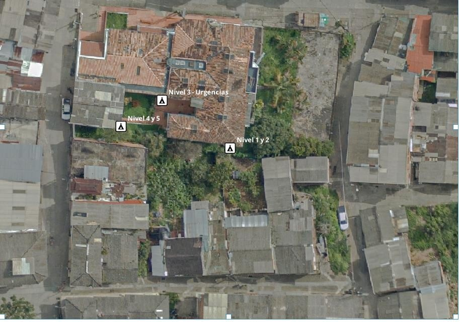

Diagnóstico técnico · vertimientos y red sanitaria
ESE Hospital El Sagrado Corazón
Briceño, Antioquia · Diagnóstico preliminar de puntos generadores de vertimientos
Visita técnica 28 de agosto de 2026 Fuente principal: diagnóstico suministrado
Resumen ejecutivo
Vista consolidada del diagnóstico técnico del hospital.
5
Niveles evaluados
30
Sanitarios
35
Lavamanos
11
Duchas
3
Puntos verificados
24 h
Operación hospitalaria
Identificación institucional
Institución
ESE Hospital El Sagrado Corazón
Municipio
Briceño, Antioquia
Dirección
Carrera 9 No. 10-38 y Calle 11 No. 8-31
Área del lote
1.537 m²
Área construida
1.383,5 m²
Atiende la visita
Maira Alejandra Zapata
Operación y población
35 personas permanentes aprox.
45 personas flotantes aprox.
72 pacientes atendidos/día
Mayor afluencia: martes y viernes
Horario pico: 10:00 a.m.–12:00 m.
Estado general del diagnóstico
CONFIRMADO
Nivel 3 – Urgencias: caja de inspección y descarga activa por tubería PVC.
POR CONFIRMAR
Niveles 1 y 2: posible conexión directa al alcantarillado, sin caja de inspección.
CONFIRMADO · BAJO USO
Niveles 4 y 5: caja de inspección con poco sedimento y presencia principalmente de hojarasca.
Sistema de evacuación de aguas residuales
Información reportada en el diagnóstico.
Condiciones generales
Conexión a alcantarillado público
SÍ
Tipo de conexión
Combinada: aguas negras + aguas lluvias en la misma red.
Tratamiento previo
NO Sin pozo séptico, sin PTAR y sin planta compacta.
Vertimiento directo a río/quebrada
La descarga se realiza a través de la red pública de alcantarillado.
Lectura técnica del diagnóstico
El hospital está conectado al alcantarillado público y no cuenta con tratamiento previo de aguas residuales reportado.
La verificación de campo identifica tres puntos asociados a los niveles del hospital, con diferente grado de confirmación.
La información sobre el trazado de conexión presenta una diferencia entre lo indicado por el personal del hospital y lo representado en los planos/catastro físico.
Inventario de aparatos hidrosanitarios
Inventario consolidado por nivel.
Nivel
Uso
Sanitarios
Lavamanos
Duchas
Otros
Nivel 1
Asistencial
8
12
—
2 pocetas de aseo; 3 lavaderos clínicos; 2 lavadoras; 2 lavaplatos; 3 llaves de manguera
Nivel 2
Administrativo
3
3
—
—
Nivel 3
Urgencias
16
18
10
2 pocetas de aseo; 2 llaves de manguera; 1 lavaplatos; 6 lavaderos clínicos; 1 vertedero clínico
Ambientes generadores identificados en los planos arquitectónicos.
NIVEL 1 · ASISTENCIAL
Generadores
Laboratorio clínico
Toma de muestras
Lavandería
Cafetería
Odontología
Aseo y baños generales
NIVEL 2 · ADMINISTRATIVO
Generadores
Baños generales
NIVEL 3 · URGENCIAS
Generadores
Esterilización
Sala de procedimientos
Sala de partos
Trabajo de parto
Obstetricia
Lactancia
Cocineta
Vacunación
Intoxicados
Aislados
Pediatría
Baños generales
NIVEL 4 · ARCHIVO
Generadores
Baños generales
NIVEL 5 · BLOQUE EXTERNO
Generadores
Baños generales
Visor geográfico · puntos de vertimiento
Ubicación espacial de los tres puntos identificados en campo. El visor no dibuja redes ni tuberías; únicamente muestra los puntos sobre la imagen aérea.
Mapa satelital · ESE Hospital El Sagrado Corazón

P-02 · Nivel 3 · Urgencias
P-03 · Niveles 4 y 5
P-01 · Niveles 1 y 2
Puntos de conexión
P-01 · Niveles 1 y 2
P-02 · Nivel 3
P-03 · Niveles 4 y 5
Referencia visual · imagen aérea del diagnóstico
5
Nivel 5Bloque externo
4
Nivel 4Archivo
3
Nivel 3Urgencias
2
Nivel 2Administrativo
1
Nivel 1Asistencial
Imágenes por nivel
Registro fotográfico organizado exclusivamente por piso, conservando las fotografías incorporadas en el diagnóstico.
Selecciona cualquier fotografía para verla en grande. Las imágenes se mantienen vinculadas al nivel indicado en el registro original.
Mapas y planos · descarga
Repositorio de mapas, planos y documentos gráficos incorporados al diagnóstico.
Documentos incorporados: Localización Cajas de Inspección Sanitaria y el plano anteriormente denominado “Planta Hidráulica”, presentado aquí con el nombre Red de Drenaje Sanitario.
🗺️
Mapa aéreo actual
Imagen aérea con los tres puntos de verificación utilizados en el visor geográfico.
Registro de los tres puntos identificados durante la visita: dos cajas de inspección confirmadas y un posible punto de conexión directa sin caja.
3 puntos identificados
2
Cajas de inspección confirmadas
P-02 y P-03
1
Posible conexión directa
P-01 · sin caja identificada
1
Descarga activa observada
P-02 · Nivel 3 Urgencias
P-01
Niveles 1 y 2
Pendiente de confirmación
Tipo: Posible conexión directa sin caja de inspección.
Coordenadas: 7.11098767 N · -75.55113245 W
Hallazgo: En campo se identificó, sobre la zona de césped junto al muro perimetral, el posible punto de conexión directa al alcantarillado.
P-02
Nivel 3 · Urgencias
Confirmado
Tipo: Caja de inspección.
Coordenadas: 7.11108018 N · -75.55126433 W
Hallazgo: Caja confirmada con descarga activa mediante tubería PVC. Se define como punto existente para toma de muestra por corresponder al nivel de mayor generación.
P-03
Niveles 4 y 5
Confirmado
Tipo: Caja de inspección.
Coordenadas: 7.11102985 N · -75.55134391 W
Hallazgo: Caja confirmada, de bajo uso. Se observó poco sedimento, principalmente hojarasca.
Lectura técnica de los puntos
Punto
Nivel
Elemento identificado
Estado
Uso / condición
P-01
1 y 2
Posible conexión directa sin caja
Pendiente
Requiere confirmación física.
P-02
3 · Urgencias
Caja de inspección
Confirmado
Descarga activa por PVC; punto para toma de muestra.
P-03
4 y 5
Caja de inspección
Confirmado
Bajo uso; poco sedimento, principalmente hojarasca.
Hallazgos y discrepancias
Comparación de la información de campo, personal y planos.
Hallazgo H-01 · Diferencia de trazado
REQUIERE CONCILIACIÓN / VERIFICACIÓN
Según el personal del hospital, la descarga se realiza por puntos ubicados en la parte posterior del edificio. En los planos/catastro físico hospitalario, la salida de la red se representa en la parte delantera del edificio.
Hallazgo H-02 · Punto de mayor generación
CONFIRMADO EN CAMPO
La caja correspondiente al Nivel 3 – Urgencias presenta descarga activa mediante tubería PVC. Por ser el nivel de mayor generación, el diagnóstico la define como punto existente para toma de muestra.
Hallazgo H-03 · Niveles 1–2
POSIBLE CONEXIÓN DIRECTA
No se identificó caja de inspección. Se ubicó un posible punto de conexión directa en zona de césped junto al muro perimetral.
Hallazgo H-04 · Niveles 4–5
CONFIRMADO · BAJO USO
La caja fue confirmada. El bajo uso es consistente con el baño de archivo sin uso y el aula del Nivel 5 utilizada de forma esporádica; se observó poco sedimento, principalmente hojarasca.
Conclusiones del diagnóstico
Síntesis basada exclusivamente en la documentación suministrada.
La ESE Hospital El Sagrado Corazón está conectada al alcantarillado público mediante un sistema combinado de aguas negras y aguas lluvias.
No se reporta tratamiento previo de las aguas residuales mediante pozo séptico, PTAR o planta compacta.
El inventario consolidado registra 30 sanitarios, 35 lavamanos y 11 duchas, además de los demás aparatos indicados por nivel.
El Nivel 3 – Urgencias concentra la mayor generación de vertimientos y cuenta con una caja de inspección confirmada con descarga activa de PVC.
En los Niveles 1 y 2 se identificó un posible punto de conexión directa sin caja de inspección, pendiente de confirmación física.
En los Niveles 4 y 5 se confirmó una caja de inspección de bajo uso.
Existe una discrepancia entre la ubicación/trazado informado por el personal y la salida representada en los planos/catastro físico, por lo que el documento debe conservar ambas fuentes diferenciadas hasta su conciliación.
El diagnóstico incluye evidencia fotográfica de los puntos de conexión identificados: P-01, P-02 y P-03. La evidencia se presenta en la sección de cajas de inspección y punto de vertimiento.
Toma de muestras
Segunda visita: recolección de la muestra compuesta del vertimiento y envío al laboratorio.
El diagnóstico inicial (secciones 01 a 10) se hizo el 28 de agosto de 2026. Esta sección documenta la toma de muestras del martes 13 de octubre de 2026. Los resultados de laboratorio se entregan en un informe independiente.
13 oct
Fecha de la toma (2026)
6 h
Periodo monitoreado
18
Tomas, cada 20 minutos
5.500 mL
Volumen de la muestra compuesta
3,18
L/min · caudal promedio
P-02
Punto · Nivel 3 Urgencias
Ficha del muestreo
Fecha
Martes 13 de octubre de 2026
Punto de muestreo
P-02 · caja de inspección del Nivel 3 (Urgencias), con descarga activa por tubería PVC
Coordenadas
7,11108118 N · 75,55130168 W (lectura del 13 de octubre) Diagnóstico del 28 de agosto: 7,11108018 N · 75,55126433 W. La diferencia, de unos 4 m, se atribuye a la precisión del GPS.
Tipo de muestra
Compuesta, proporcional al caudal
Inicio y tomas
Inicio del monitoreo a las 10:40; tomas de 11:00 a 16:40, cada 20 minutos
Medición de caudal
Método volumétrico: dos capturas de 20 s por toma, promediadas
Volumen final
5.500 mL (la suma de los volúmenes redondeados es 5.502 mL)
Condiciones climáticas
Responsable
Laboratorio
HidroQuímica Laboratorio Ambiental
Parámetros enviados al laboratorio
La caracterización solicitada comprende:
pHDBO5 totalDQO totalSólidos suspendidos totalesSólidos sedimentablesGrasas y aceites
El pH también se verificó en campo con tiras reactivas.
Los resultados y su comparación con la normativa no se muestran aquí: se presentan en el informe de resultados del laboratorio.
Cómo se hizo la toma
10:09 · PreparaciónAcceso a la caja de inspección y montaje de envases rotulados.
10:40 · InicioMinuto 0 del periodo de seis horas.
11:00–16:40 · 18 tomasUna toma cada 20 minutos, con medición de caudal.
16:41–17:11 · MezclaVolumen proporcional al caudal con probeta, pH con tiras y mezcla final.
Envío al laboratorioMuestra conservada en frío y enviada a HidroQuímica.
Alcance de la muestra: representa el vertimiento del Nivel 3 entre las 10:40 y las 16:40 de un martes, día de mayor afluencia. No incluye la noche ni los aportes de los Niveles 1 y 2, donde están el laboratorio clínico, la lavandería, la odontología y la cafetería (punto P-01, pendiente de confirmación).
Caudales del muestreo compuesto
Punto P-02 · Nivel 3 (Urgencias) · 13 de octubre de 2026 · 18 tomas cada 20 minutos (11:00 a 16:40).
Detalle de la toma
Gráfica principal
Volumen a mezclar por toma
Aporte de cada toma (mL) frente a la capacidad del tarro.
Volúmenes acumulados
Compuesta (mL, eje izquierdo) y volumen estimado que pasó por el punto (L, eje derecho).
Aporte de cada toma a la compuesta
Porcentaje del volumen final que aporta cada toma.
Desviación del caudal frente al promedio
Cuánto se aleja cada toma del caudal promedio del periodo seleccionado (%).
Caudal promedio por hora
Promedio de las tomas de cada hora del reloj (L/min).
Distribución del caudal
Número de tomas por rango de caudal (L/min).
Datos de campo
Haz clic en un encabezado para ordenar y en una fila para ver el detalle. Las horas son las programadas para cada toma.
Método de cálculo
En cada toma se capta el agua durante 20 s, dos veces, y se promedia el volumen.
Factor de proporcionalidad: 5.500 mL ÷ suma de caudales = 96,03 mL por cada L/min.
Volumen a mezclar en el tarro: Q × 96,03, redondeado a mL. Ninguna toma supera los 500 mL del tarro. La suma de los volúmenes redondeados es 5.502 mL, frente al objetivo de 5.500 mL.
Volumen estimado que pasó por el punto: Q × 20 min por toma, suponiendo que cada toma representa su intervalo de 20 minutos. Es una estimación.
Registro fotográfico de la toma
Fotografías del 13 de octubre de 2026, ordenadas por etapa del muestreo.
Selecciona cualquier fotografía para verla en grande. Las coordenadas y la hora que aparecen en los pies de foto son las impresas en cada imagen.
ESE Hospital El Sagrado Corazón · Briceño, Antioquia · Diagnóstico preliminar de puntos generadores de vertimientos · 28 de agosto de 2026